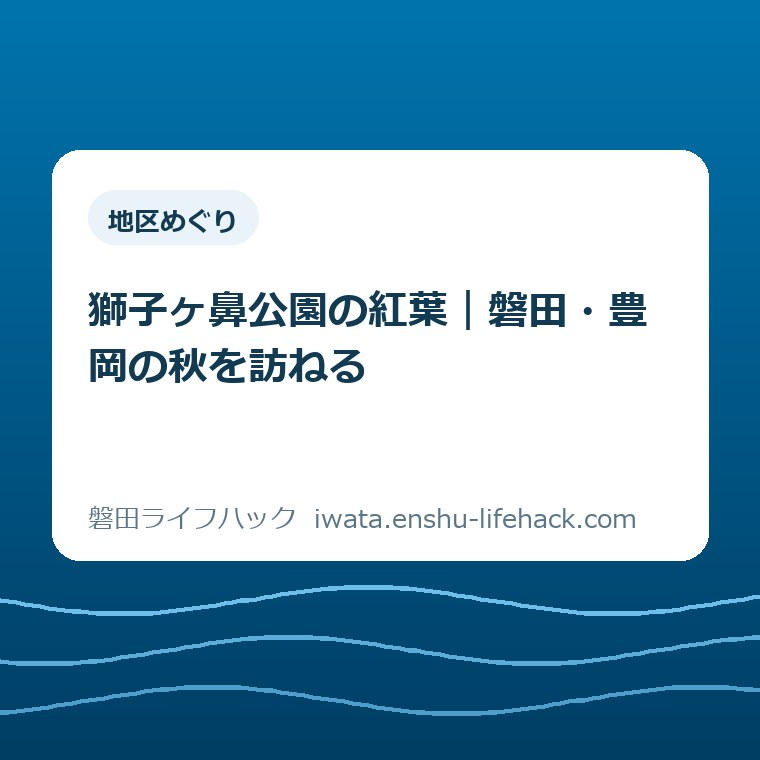

地区めぐり
獅子ヶ鼻公園の紅葉｜磐田・豊岡の秋を訪ねる

この記事の要点
Q. 獅子ヶ鼻公園の紅葉は、いつ頃見に行けばいい？
A. 磐田市の花ごよみでは11月下旬～12月上旬が目安です。今年の色づき速報ではありません。豊岡地区にあり、駐車場は岩室199-1。今日は市の季節案内を開き、家族の予定に候補の時期を仮置きするところから始められます。
紅葉を見に行く日にも、家族の段取りがある
家族で公園へ出かける日は、着替えや飲み物だけでなく、食事や帰宅後の予定まで考えることになります。小さい子の支度をする方、親の歩く速さに合わせる方、運転を担う方。それぞれが、出発前から時間と手間を払っています。「秋だから出かけよう」の一言では済まない準備です。
大石浩之（磐田市／不動産業）です。私は、地域の行き先を紹介するときも、その場所が魅力的かどうかだけで終えたくありません。家族が使える時間の中に収まるか。帰り道まで無理がないか。日々の暮らしを組み立てる側から、公開されている情報を読みたいと考えています。
今回訪ねる候補は、磐田市の豊岡地区にある獅子ヶ鼻公園です。磐田市の「花ごよみ」には、紅葉の時期が11月下旬～12月上旬と載っています。この記事を公開する2026年10月23日は、その案内の時期より前です。今週末に赤く染まっている、という紹介ではありません。
公園の利用状況や歩きやすさは、天候、現地の状態、同行する方の体力などで変わります。施設の案内があることだけで、家族全員が同じように過ごせるとは判断できません。この記事では市の公表情報と私の提案を分け、今年の現地の色づきや未確認の通行状況を言い切らずに整理します。
獅子ヶ鼻公園の紅葉は、11月下旬～12月上旬が市の目安
磐田市の「磐田の花ごよみ」は、市内で花が見られる場所と時期を月ごとにまとめたページです。2026年9月17日更新の表には、獅子ヶ鼻公園の紅葉を「11月下旬～12月上旬」と記載しています。この記事では2026年10月23日に内容を確認しました。
この表から分かるのは、季節の行き先を考えるための目安です。特定の日に紅葉が完成するという予報でも、2026年の現地を毎日観測した記録でもありません。日付を見て予約のように予定を固めると、季節案内に載っていない確実さまで期待することになってしまいます。
秋の外出先と聞くと、10月の休日を思い浮かべる方もいるかもしれません。ところが、市がこの公園の紅葉に挙げている時期は12月上旬まで含んでいます。これは予定を考えるうえで役立つ事実です。「秋の公園」という印象だけで日を選ばず、場所ごとの案内を読む意味があります。
私は、予定表には「紅葉を見に行く日」と確定させず、「獅子ヶ鼻公園を考える時期」と書くくらいがよいと思います。休日の候補を残しておけば、直前に別の用事が入ったときも調整できます。季節を楽しむための計画が、家族の予定を縛る約束にならないようにしたいからです。

市内でも、植物や公園が違えば案内される時期は違います。豊田香りの公園のキンモクセイの記事も、季節の情報を読むための別の入口です。同じ日に両方が見頃とは限りません。今回は獅子ヶ鼻公園の紅葉に目的を絞り、ほかの公園の時期をそのまま当てはめないようにします。
豊岡地区のどこにあるか。移動時間は出発点とセットで読む
磐田市の「施設ガイド 獅子ヶ鼻公園」は、エリアを豊岡地区と記載しています。所在地は「磐田市岩室199-1（公園駐車場）」です。住所の後ろに駐車場と書かれている点まで読み、行き先を共有するときも公園名と合わせて伝えると、目的地をそろえやすくなります。
同じ施設ガイドにある交通アクセスは、新東名「新磐田スマートI.C.」から車で約10分、東名「磐田I.C.」から車で約25分、天竜浜名湖鉄道「敷地駅」から徒歩50分です。これらは市が示した出発点からの目安であり、自宅から到着するまでの所要時間ではありません。
| 出発点 | 移動手段と目安 |
|---|---|
| 新磐田スマートI.C. | 車で約10分 |
| 磐田I.C. | 車で約25分 |
| 天竜浜名湖鉄道・敷地駅 | 徒歩50分 |
車で約10分という数字が目に入っても、市内のどの家からも10分で着くわけではありません。自宅からの移動、途中の休憩、到着後の支度は別です。私は家族の予定を考えるとき、「公園へ着くまで」と「公園で過ごす時間」を分けます。短いアクセス表示だけで一日の負担を測らないためです。
敷地駅から徒歩50分という案内も、園内の散策時間ではありません。駅を利用する場合、少なくとも公園へ向かう歩きの時間として読む必要があります。帰路の移動や列車を待つ時間も予定に入りますが、このページの数字だけでは、それらを合わせた一日の所要時間までは分かりません。
歩くことを目的にした大人の外出と、子どもや親と短く紅葉を見る外出では、同じ距離の受け止め方が違います。駅から歩けるという情報を、誰にでも気軽という意味に置き換えない。この区別は、近くに見える場所を選ぶときにも役立ちます。交通手段を決める前に、同行者の希望をそろえたいところです。

駐車場とトイレの記載から分かること、分からないこと
施設ガイドには駐車場が「有り」と記載されています。この記事で確認したページには、駐車できる台数や、その日の空き状況は示されていません。駐車場があることと、訪れたい時間に必ず停められることは別です。台数を推測して紹介せず、車で向かうときの確認材料として扱います。
園内施設として掲載されているのは、滑り台、リングジム、雲梯、木製アスレチック遊具、ターザンロープ、トイレです。木製アスレチックの例には丸太くぐりや壁のぼり等が挙げられています。トイレは多目的トイレの記載があります。施設ガイドの更新日は2025年2月25日です。
遊具の一覧は公園を知る手がかりになりますが、現在すべて使えるという確認とは異なります。年齢に合うか、当日利用できるか、現地に注意書きがないかは、一覧の名前だけでは決められません。この記事は紅葉を訪ねる場所の紹介であり、個々の遊具の利用可否を保証するものではありません。
バリアフリー対応状況には、一般駐車場、車いす使用者用トイレ、車いす対応の出入り口の表示があります。これは施設に備わる設備の情報です。一方で、紅葉を見る場所までの道すべてに段差がない、車いすやベビーカーで園内全体を回れる、という説明までは確認できませんでした。
歩行に不安のある方と訪れるなら、「対応の出入り口がある」から一歩進めて、どこからどこまで移動したいのかを考える必要があります。施設の表示を過小評価することも、過大な安心に変えることも避けたいと思います。分かっている設備と、確かめる必要がある経路を分ける読み方です。
施設の利用について確かめる際の窓口として、市の施設ガイドには公園・みどりのまちグループ、電話0538-37-4806が掲載されています。受付時間は午前8時30分～午後5時15分です。ただし、紅葉の進み具合を常時把握しているとは書かれていません。設備の問い合わせ先と、現地の速報が得られる先を同一視しないようにします。
良い点：季節と場所を、市の情報から組み立てられる
私が良いと思うのは、紅葉を見る時期と、実際に向かう場所を、市の二つのページで照らし合わせられることです。花ごよみだけなら季節の候補が分かり、施設ガイドを合わせれば住所やアクセスが分かります。風景の写真だけでは不足する、家族の外出の土台になる情報です。
とくに、所在地が公園駐車場の住所として示されている点は、車で向かう家族の相談に使えます。名前だけを送るより、目的地の意味がはっきりします。別々の場所から集まる場合にも、地図の目的地を互いに確かめるきっかけになります。小さな記載でも、当日の行き違いを減らす材料になります。
もう一つ、車と鉄道駅からの徒歩の両方が掲載されているため、移動の違いを想像できます。徒歩50分という数字を見て、歩く日として計画する家族もいれば、今回は車にしようと考える家族もいるでしょう。数字があるから、行く・行かないを含めて自分たちの条件に照らせます。
近くの公園を広く探す場合には、サイト内の「近所の公園を探す」ガイドも入口になります。獅子ヶ鼻公園の紅葉を見たいのか、近場で少し外に出たいのか。目的を分ければ、行き先を必要以上に一つへ固定せずに済みます。
注文したい点：設備の名前と、家族が歩く経路をつなぎたい
私が注文したいのは、設備の一覧から実際の移動を想像する間に、まだ空白があることです。駐車場、トイレ、出入り口があると分かっても、その間をどう動くかは別の情報になります。紅葉を見たい家族にとっては、設備があることと同じくらい、そこへ無理なく行けることが気になります。
たとえば、歩ける時間が限られる親と行く場合には、駐車してからどこまで向かうかを先に知りたくなります。これは私が考える利用場面であり、実際に受けた相談を再現したものではありません。今回確認した二つのページだけでは、個々の家族に合う園内の行程まで答えを出せません。
将来、設備の案内と経路の情報を一緒に見られるようになれば、出発前に調べる負担を減らせると思います。ただ、その情報を整え、状況の変化に合わせて保つ側にも手間がかかります。私は、すべてを一度に求めるより、利用者が迷いやすい区間から分かる形になると助かる、と考えています。
この記事でも、未確認の近道や紅葉の観賞場所への道順を補いません。地図の線を見ただけで歩きやすさを判断すると、現地で家族が困るおそれがあります。詳しく書かれているように見せるために不確かな案内を足すより、分からない範囲を明らかにするほうが、外出の準備には誠実です。
紅葉を見る日と、たくさん歩く日を同じにしなくてよい
家族の外出で私がすすめたいのは、目的を一つに絞る考え方です。紅葉を見ることを主役にするなら、遊具も長い散策も全部こなす予定にしなくて構いません。園内に複数の施設があるという情報は、全部回る義務ではありません。楽しみを足す前に、その日使える時間を確かめたいところです。
小さい子と行く場合は、準備をした大人の期待と、当日の子どもの気分が一致しないことも考えておけます。紅葉をじっくり見るつもりでも、短い滞在で帰る選択を残す。これは特定の遊具や経路をすすめる話ではなく、家族の外出の組み方についての私の意見です。
親と行く場合にも、どれだけ見られたかより、帰宅後まで疲れを持ち越さない予定を優先したいと思います。施設案内にある徒歩の数字を、そのまま家族の歩行能力へ当てはめることはできません。歩ける範囲や休憩の取り方は本人の希望を聞き、無理な行程を予定に組み込まないようにします。
歩くことそのものを目的にする日なら、磐田市ウォーキングマップの読み方も参考になります。ただし、その記事のコースを獅子ヶ鼻公園の園内ルートとして使うことはできません。別の資料の目的と対象を分けて、今日の外出に必要な情報を選びます。
子どもの遊び場を優先したい家族には、竜洋十束公園の遊具を紹介した記事もあります。これは別の日や別の行き先を考えるための候補です。同じ日に豊岡と竜洋を回る行程をすすめるものではありません。行き先を増やすより、一つ選び直す余地を残します。
対案・結論：今日は市の花ごよみを一度開く
獅子ヶ鼻公園の紅葉を考えている方の今日の一歩は、市の「磐田の花ごよみ」を開くことです。表の獅子ヶ鼻公園の行を見て、11月下旬～12月上旬という案内を家族の予定と照らします。この段階で訪問日を決める必要はありません。行き先の候補として共有できれば、今日の準備はそこまでで十分です。
家族へ送るなら、「市の目安は11月下旬～12月上旬。今の色づきはこの表では分からない」と短く添えると、情報の意味がずれにくくなります。見頃を断定した見出しだけを共有すると、現地の最新情報だと受け取られるかもしれません。出典のリンクと、何が分かる資料かを一緒に渡します。
行く日が近づいた段階では、天候や現地の利用案内など、その日に必要な情報が変わっていないかを確かめます。これは新たな手続きを増やすためではありません。今日確認できる季節の目安と、出発前でないと判断しにくいことを分け、準備を一度に背負わないための考え方です。
私は、「せっかく調べたのだから必ず行く」と考えなくてもよいと思います。家族の予定が合わないなら、候補に残しておく。天候や体調が合わないなら、その日は見送る。調べた時間は無駄ではありません。豊岡にどんな季節の行き先があるかを知ることも、暮らす地域への理解を一つ増やします。
大石の視点：見頃を当てるより、無理なく帰れる計画を
ここからは私の意見です。地域の魅力を伝えたい一方で、公開情報が少ない部分をどこまで説明できるか、迷いもあります。行き先のよさを詳しく伝えようとするほど、まだ見ていない現地の様子まで言葉で埋めたくなる。しかし、それをしてしまえば、読者が予定を決める材料を誤らせます。
私は、見頃を当てることより、同行者が無理なく帰れる計画を優先します。これは紅葉の価値を小さくする話ではありません。暮らしの中で季節を楽しむには、運転する人、準備をする人、歩く人の負担が釣り合っているほうがよい。景色を見る前後の時間も、家族の一日の一部だからです。
獅子ヶ鼻公園について今言えるのは、市が紅葉の季節の目安を示し、豊岡地区の住所やアクセス、設備を公開していることです。その情報を使って、自分たちに合う外出か考える。制度や施設の利用条件は個別の状況で変わり、掲載情報も更新されます。最終的には磐田市の公式ページで最新情報を確認してください。
よくある質問
獅子ヶ鼻公園の紅葉はいつ頃ですか。
磐田市の「磐田の花ごよみ」は、獅子ヶ鼻公園の紅葉を11月下旬～12月上旬と案内しています。2026年10月23日に確認した季節の目安であり、2026年の現地の色づき速報ではありません。特定の日の見頃を保証する情報として扱わず、訪問前に市公式ページの最新案内を確認してください。
獅子ヶ鼻公園の駐車場とアクセスは。
市の施設ガイドは駐車場有りとし、所在地を磐田市岩室199-1（公園駐車場）と掲載しています。新磐田スマートI.C.から車で約10分、磐田I.C.から約25分、敷地駅から徒歩50分が目安です。自宅からの総所要時間や園内散策の時間ではなく、駐車場の空き状況も保証されていません。
子どもや歩行に不安のある家族と行けますか。
市の施設ガイドには遊具、多目的トイレ、車いす対応の出入り口などが掲載されています。ただし、設備の記載だけで園内全体の移動や当日の利用可否は判断できません。同行者の体力や希望に合わせ、使いたい設備と経路を具体的にして市の公式案内で確認し、無理のない訪問を考えてください。
参考にした公式情報
- 磐田市「磐田の花ごよみ」（2026年9月17日更新、2026年10月23日確認）
- 磐田市「施設ガイド 獅子ヶ鼻公園」（2025年2月25日更新、2026年10月23日確認）
最終確認日：2026-10-23 ／ 本記事は公表情報と執筆者の見解を分けて記載しています。制度・数値・公開状況は変更される場合があるため、最新情報は磐田市公式ページでご確認ください。